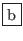
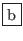

Chaque fichier édité est stocké dans un buffer,
et au cours d'une session peut être rappelé à
tout moment, par menu déroulant ou par la commande
 -
-  nom_de_buffer. Un buffer a en général le même
nom que le fichier qu'il représente.
 nom_de_buffer. Un buffer a en général le même
nom que le fichier qu'il représente.
La commande permettant de connaître la liste des buffers
est
 -
-
 -. Une commande peut être passée
en tête de chaque ligne pour sélectionner un buffer
(mode pleine-page, mode fenêtre, etc.). Une astérisque
en colonne 1 indique que le buffer correspondant a été
modifié, un "
-. Une commande peut être passée
en tête de chaque ligne pour sélectionner un buffer
(mode pleine-page, mode fenêtre, etc.). Une astérisque
en colonne 1 indique que le buffer correspondant a été
modifié, un "%" indique un accès en mode lecture uniquement.
Pour avoir la liste des fonctionnalités disponibles, taper
en tête de ligne.
La commande permettant de supprimer un buffer est
 -
-
 . Pour
supprimer plusieurs buffers, activer la liste des buffers (commande
. Pour
supprimer plusieurs buffers, activer la liste des buffers (commande
 -
-
 -), taper
-), taper  au début des lignes indiquant les
buffers à supprimer. La commande sera effective lorsque
vous taperez
au début des lignes indiquant les
buffers à supprimer. La commande sera effective lorsque
vous taperez  .
.
Si vous créez un nouveau buffer (
 -
- ), il n'y aura aucun lien
entre le buffer ouvert et un éventuel fichier disque portant le même nom. Encore
une fois, un buffer ne représente qu'un espace de travail.
), il n'y aura aucun lien
entre le buffer ouvert et un éventuel fichier disque portant le même nom. Encore
une fois, un buffer ne représente qu'un espace de travail.
Remarque 19..10 :
Supprimer un buffer n'entraîne pas suppression du fichier disque. Seule la copie du fichier dans l'espace de travail "emacs" est supprimée.